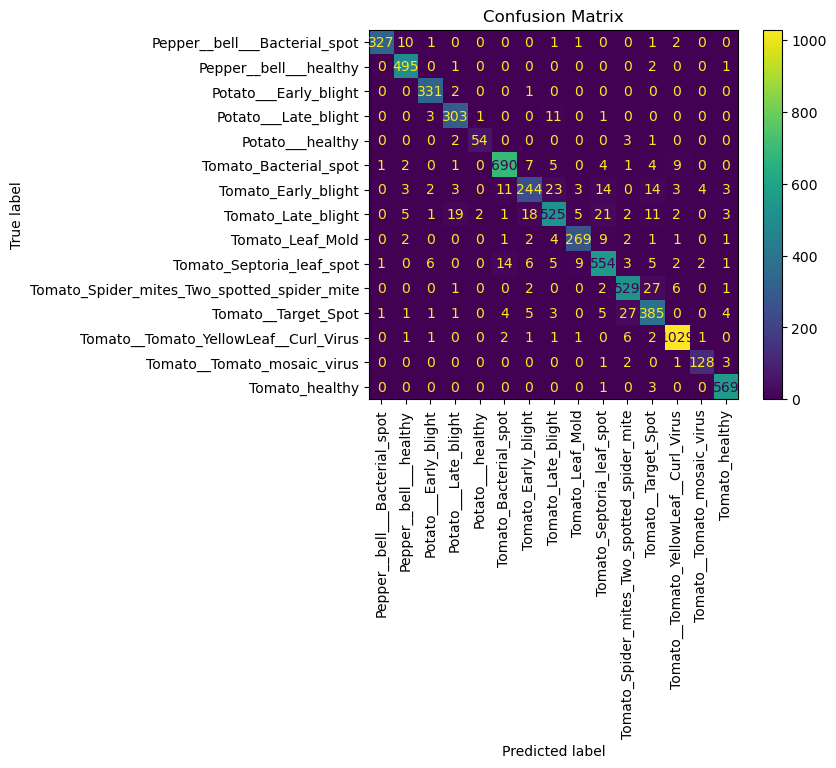
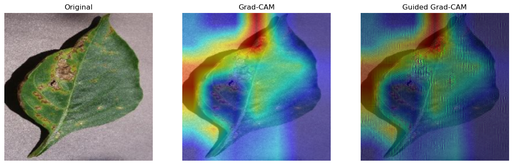
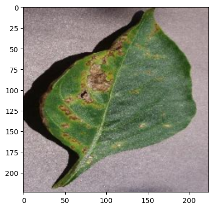
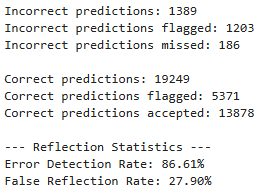
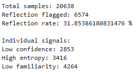
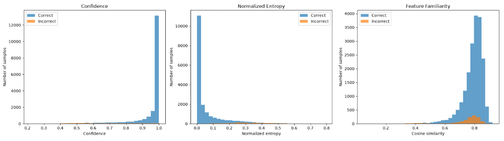
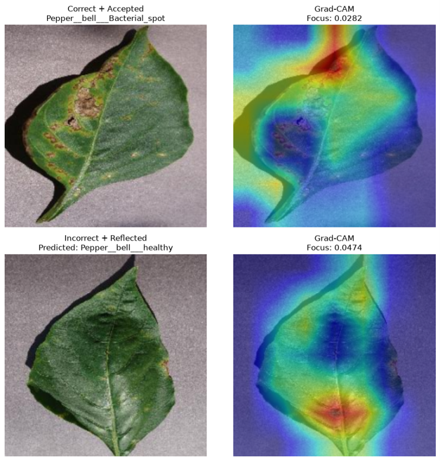

Self-Reflective and Continually-Learning AI Assistant for Crop Disease Diagnosis
PBL-3: Self-Reflection for Reliable Crop Disease Diagnosis
MobileNetV3-Small + 3-Fold Cross Validation + Reflection SignalsThis project develops a crop disease diagnosis system that goes beyond classification accuracy by investigating whether a vision model can assess the reliability of its own prediction. The current phase establishes a self-reflection prototype using model-derived confidence, uncertainty and feature-space familiarity, with Grad-CAM providing qualitative explanation evidence.
Problem Statement
A high-confidence prediction is not necessarily a reliable prediction. In crop disease diagnosis, visually similar disease classes and unfamiliar samples can cause a model to make incorrect predictions while remaining confident. Therefore, the system needs an additional mechanism that can assess prediction reliability rather than relying only on the predicted class.
Research Question
“Can a vision model assess the reliability of its own prediction using additional model-derived evidence?”
Research Direction
Established prediction signals are combined into a reflection-oriented decision layer. The individual components are not claimed as novel; the present contribution is their integration and subsequent empirical evaluation for crop-disease classification.
Baseline Methodology
Dataset & Preprocessing
PlantVillage subset containing Pepper, Potato and Tomato diseases.
20,638 images across 15 classes.
Images resized to 224×224 and normalized.
Stratified 3-Fold Cross Validation.
Model & Training
MobileNetV3-Small with ImageNet weights.
Frozen feature extractor.
Final classifier retrained for 15 classes.
CrossEntropyLoss + Adam.
10 epochs per fold.
Implementation
Python-based experimental pipeline with PyTorch, scikit-learn and Grad-CAM.
VIEW CODE / DEMOBaseline Results
The MobileNetV3-Small baseline achieved a mean accuracy of 93.27% ± 0.14% across three stratified folds.
Fold 1
93.28%
Fold 2
93.43%
Fold 3
93.09%
Baseline established using stratified 3-fold cross-validation and out-of-fold predictions.
Baseline Outputs

Confusion matrix showing the class-wise performance of the baseline model.

Guided Grad-CAM visualization showing image regions contributing to a prediction.

Example prediction from the trained crop disease classifier.
Self-Reflection Prototype
The model's prediction is augmented with additional evidence to estimate whether the prediction should be accepted or flagged for review.
Reflection Formulation
C
Confidence
H
Entropy
S
Familiarity
E
Evidence
Current numerical prototype uses C, H and S. E is incorporated qualitatively through Grad-CAM because region-level ground-truth annotations are not available for the present dataset.
Reflection Signals
Confidence
Maximum softmax probability used as the model's direct confidence signal.
Uncertainty
Prediction entropy measures how concentrated or distributed the class probabilities are.
Familiarity
Cosine similarity between the sample embedding and the prototype of its predicted class.
Provisional Reflection Rule
Thresholds are provisional and will be rigorously selected and evaluated in the next phase.
Prototype Evaluation

Flagged
31.85%
Incorrect Flagged
86.61%

On the current out-of-fold prototype, the reflection rule flagged 6,574 of 20,638 predictions. Of 1,389 incorrect predictions, 1,203 were flagged while 186 were missed.
These values are exploratory prototype diagnostics, not final leakage-free reflection performance. The thresholds were selected after inspecting the same out-of-fold signal distributions and must be validated on a clean evaluation protocol.
Signal Distribution

Out-of-fold distributions of confidence, normalized entropy and feature-space familiarity.
Reflection + Grad-CAM

Grad-CAM provides qualitative evidence for the reflection layer by showing which image regions contributed to the prediction.
The current implementation does not treat Grad-CAM as a numerical reliability score. Instead, it acts as complementary explanation evidence while the numerical prototype relies on confidence, entropy and familiarity.
Future Work
The current reflection layer is a prototype. The remaining work focuses on rigorously evaluating whether these signals provide a measurable reliability benefit.
01 — Threshold Selection
Rigorous Threshold Selection
Replace the current provisional thresholds with thresholds selected using a leakage-free validation protocol.
02 — Evaluation
Reflection Performance
Measure error detection, false reflection rate, precision and selective prediction using risk–coverage analysis.
03 — Ablation
Signal Contribution
Compare individual and combined reflection signals to determine how much each signal contributes to reliability assessment.
04 — Calibration
Reliability Analysis
Evaluate whether model confidence corresponds to actual correctness using calibration and reliability analysis.
PBL-3 Goal: Establish whether the proposed reflection layer provides a measurable reliability benefit beyond the baseline classifier.
Academic Credits
Project Guide
Dr. Amit Kumar Gupta
Student Name
Chinmaya
2427030604
Project Status
PBL-3: Self-Reflection
Prototype Evaluation in Progress